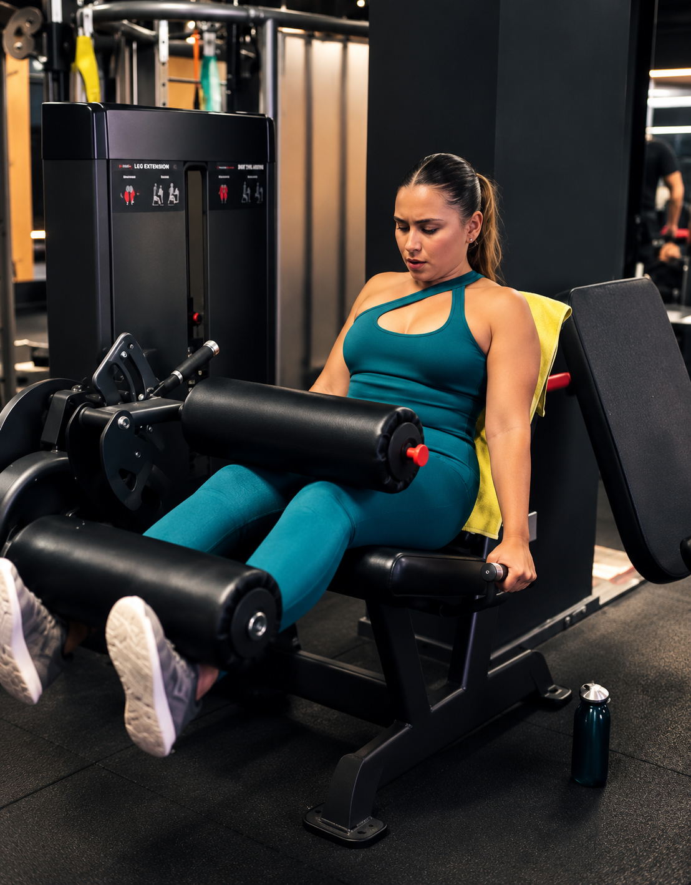

IRONLEGS

POTENCIA, FUERZA Y DESARROLLO DEL TREN INFERIOR
Ironlegs es nuestra clase mono-gráfica dedicada exclusivamente al trabajo intenso de piernas, glúteos y cadena posterior. Una sesión diseñada para esculpir, ganar fuerza funcional y desarrollar potencia atlética en el tren inferior.
Combinamos sentadillas, peso muerto, trabajo de empuje de cadera y ejercicios unilaterales para corregir descompensaciones musculares. Con la supervisión de nuestros entrenadores, adaptarás el peso e intensidad para desafiar tus límites con absoluta seguridad.
Enfoque Glúteos y Piernas
Trabajo específico en cuádriceps, isquiotibiales, glúteo mayor y gemelos.
Estabilidad y Cadera
Mejora la movilidad articular de cadera y tobillos para un patrón de movimiento óptimo.
Trabajo Unilateral
Corrige asimetrías de fuerza entre ambas piernas previniendo descompensaciones.
Resistencia Mental
Supera la fatiga muscular en una sesión estimulante orientada a resultados tangibles.
HORARIOS MIÉRCOLES
08:30h · 09:45h · 16:45h · 17:50h · 18:45h · 20:00h
VÍDEO DE IRONLEGS
IRONLEGS